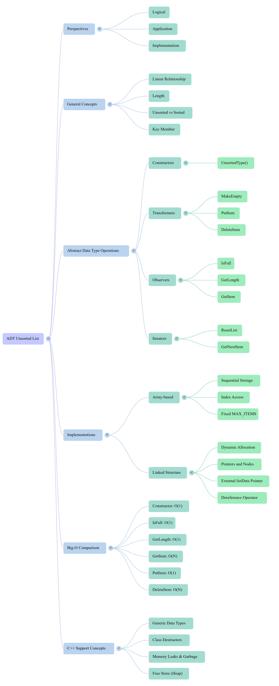

Xinxing Wu
<p class='titlep'> </p> # ADT Unsorted List <hr> <br> Xinxing Wu
# Outline [<p class="hover-underline-animation">Lists + ADT idea</p>](#/ch1) [<p class="hover-underline-animation">Unsorted List ADT specification</p>](#/ch2) [<p class="hover-underline-animation">Array-based implementation</p>](#/ch3) [<p class="hover-underline-animation">Summary</p>](#/ch4) [<p class="hover-underline-animation">Application</p>](#/ch5)
## Goal <div id="shadebox-neon" class="shadebox neon"> How to *design* a List as an ADT, then <spanBYMix>*implement*</spanBYMix> it using an array. </div>
## Goal (Cont.) <div id="shadebox-neon" class="shadebox neon"> You should be able to: - Explain what a **List** is and what “**<spanRED>un</spanRED>sorted**” means - Describe an ADT from 3 views: **logical**, **implementation**, **application** - Use the key operations of an <spanGREEN>Unsorted</spanGREEN> List ADT: - `MakeEmpty`, `IsFull`, `GetLength`, `PutItem`, `GetItem`, `DeleteItem` - iteration: `ResetList`, `GetNextItem` </div>
## Goal (Cont.) <div id="shadebox-neon" class="shadebox neon"> You should be able to: - Implement an Unsorted List using a <spanGREEN>**simple array-based class**</spanGREEN> in C++ - Write a **tiny test plan** and run small tests </div>
<p class="definition-rainbow-title">Lists + ADT idea</p>
<div class="definition-pro-Y-container"> <div class="definition-pro-Y-title">Lists + ADT idea</div> <div class="definition-pro-Y-shadebox"> <div style="width: 800px;"></div> What is a List? <hr style="border:0;height:6px;border-radius:999px;background:linear-gradient(90deg,#ff3b3b,#ffb13b,#fff23b,#3bff8f,#3bc8ff,#8a3bff,#ff3b3b);background-size:300% 100%;animation:rainbowLine 4s linear infinite;"><style>@keyframes rainbowLine{0%{background-position:0% 50%}100%{background-position:300% 50%}}</style> ADT views, unsorted vs sorted, keys <hr style="border:0;height:6px;border-radius:999px;background:linear-gradient(90deg,#ff3b3b,#ffb13b,#fff23b,#3bff8f,#3bc8ff,#8a3bff,#ff3b3b);background-size:300% 100%;animation:rainbowLine 4s linear infinite;"><style>@keyframes rainbowLine{0%{background-position:0% 50%}100%{background-position:300% 50%}}</style> An Abstract Data Type (ADT) is a mathematical model for a data type that defines a set of values and a set of operations on those values. It is "abstract" because it is independent of any specific implementation in a programming language. <hr> The primary characteristic of an ADT is that its behavior is defined by its specification rather than its implementation. Users interact with the ADT only through its defined operations, without needing to know the underlying code or data structures used to store the data. </div> </div> <div class="question-container"> <div class="question-title">Real life lists</div> <div class="question-shadebox"> <div style="width: 800px;"></div> - grocery items - to-do items - contacts - playlist songs **Programming lists do the <spanRED>same</spanRED> thing:** store many related items in <spanBYMix>one structure</spanBYMix>. </div> </div> <div class="question-container"> <div class="question-title">What is a “List”</div> <div class="question-shadebox"> <div style="width: 800px;"></div> A **List** is a collection of elements arranged in a **linear** order. - “linear”: you can talk about **next** and **previous** - There is a **first** element and a **last** element </div> </div> <div class="question-container"> <div class="question-title">Predecessor / Successor</div> <div class="question-shadebox"> <div style="width: 800px;"></div> In a list: - Every element (except the first) has a **predecessor** (the one before it) - Every element (except the last) has a **successor** (the one after it) <hr style="border: none; border-top: 2px dashed green;"> Example: `A -> B -> C` - predecessor of `B` is `A` - successor of `B` is `C` </div> </div> <div class="question-container"> <div class="question-title">Length (size) of a list</div> <div class="question-shadebox"> <div style="width: 800px;"></div> **Length** = number of items currently stored. <hr style="border:0;height:6px;border-radius:999px;background:linear-gradient(90deg,#ff3b3b,#ffb13b,#fff23b,#3bff8f,#3bc8ff,#8a3bff,#ff3b3b);background-size:300% 100%;animation:rainbowLine 4s linear infinite;"><style>@keyframes rainbowLine{0%{background-position:0% 50%}100%{background-position:300% 50%}}</style> - length can change over time: - you can <spanBYMix>insert</spanBYMix> items - you can <spanGREEN>delete</spanGREEN> items </div> </div> <div class="question-container"> <div class="question-title">Example</div> <div class="question-shadebox"> <div style="width: 800px;"></div> Length = number of items currently in the backpack - If you have 3 books and 1 laptop → length = 4 <div><hr class="wind-belt"><style>.wind-belt{border:0;height:14px;margin:18px 0;border-radius:999px;background:linear-gradient(180deg,rgba(255,255,255,.45),rgba(255,255,255,0) 45%),linear-gradient(90deg,#ff3b3b,#ffb13b,#fff23b,#3bff8f,#3bc8ff,#8a3bff,#ff3b3b);background-size:100% 100%,300% 100%;background-position:center,0% 50%;box-shadow:0 10px 20px rgba(0,0,0,.10),inset 0 2px 4px rgba(255,255,255,.35),inset 0 -2px 5px rgba(0,0,0,.18);display:block;transform-origin:10% 50%;animation:beltWave 2.8s ease-in-out infinite,rainbowSlide 5s linear infinite;}@keyframes beltWave{0%{transform:translateY(0px) rotate(-1.8deg) skewX(-3deg);filter:brightness(1);}25%{transform:translateY(2px) rotate(1.8deg) skewX(3deg);}50%{transform:translateY(0px) rotate(-1.2deg) skewX(-2deg);filter:brightness(1.06);}75%{transform:translateY(-2px) rotate(1.2deg) skewX(2deg);}100%{transform:translateY(0px) rotate(-1.8deg) skewX(-3deg);filter:brightness(1);}}@keyframes rainbowSlide{0%{background-position:center,0% 50%;}100%{background-position:center,300% 50%;}}</style></div> Length changes over time: - Insert items: You put in a water bottle → length becomes 5 - Delete items: You take out a book → length becomes 4 So the length is not fixed — it always reflects how many items are inside right now. </div> </div> <div class="question-container"> <div class="question-title">Example</div> <div class="question-shadebox"> <div style="width: 800px;"></div> A to-do list - Length = number of tasks on your list - Add a task → length increases - Complete/delete a task → length decreases Exactly like an array or list in programming. </div> </div> <p class='titlep'> </p> > Can we change the length of an array in C++? <div class="question-container"> <div class="question-title">Array in C++</div> <div class="question-shadebox"> <div style="width: 800px;"></div> A built-in C++ array like int a[10]; has a fixed size. You cannot change its length after it’s created. </div> </div> <div class="question-container"> <div class="question-title">Array in C++</div> <div class="question-shadebox"> <div style="width: 800px;"></div> ``` #include <iostream> using namespace std; int main() { int a[5] = {10, 20, 30, 40, 50}; cout << "First element: " << a[0] << endl; cout << "Third element: " << a[2] << endl; return 0; } ``` </div> </div> <div class="question-container"> <div class="question-title">Array alternatives in C++</div> <div class="question-shadebox"> <div style="width: 800px;"></div> - Use std::vector (recommended): it can grow/shrink. ``` #include <vector> using namespace std; int main() { vector<int> v = {1,2,3}; v.push_back(4); // grows v.pop_back(); // shrinks v.resize(10); // change size to 10 } ``` </div> </div> <div class="question-container"> <div class="question-title">Array alternatives in C++</div> <div class="question-shadebox"> <div style="width: 800px;"></div> ``` #include <vector> #include<iostream> using namespace std; int main() { vector<int> v = { 1,2,3 }; v.push_back(4); // grows v.pop_back(); // shrinks v.resize(10); // change size to 10 for (int v_i: v) { std::cout << v_i << std::endl; } } ``` </div> </div> <div class="question-container"> <div class="question-title">Array alternatives in C++</div> <div class="question-shadebox"> <div style="width: 800px;"></div> - Use dynamic memory (new[]) (older style): you can’t truly “resize” either—you must allocate a new bigger array and copy. ``` int* a = new int[3]{1,2,3}; int* b = new int[5]; for (int i = 0; i < 3; i++) b[i] = a[i]; delete[] a; // free old a = b; // now "a" points to bigger array ``` </div> </div> <div class="question-container"> <div class="question-title">Unsorted Examples</div> <div class="question-shadebox"> <div style="width: 800px;"></div> - <b>A stack of mail on the table</b>: letters and flyers land in whatever order they arrive. - <b>Parking lot at a store</b>: cars park wherever there’s an open spot, not in sorted order. </div> </div> <div class="question-container"> <div class="question-title">Unsorted Examples (Cont.)</div> <div class="question-shadebox"> <div style="width: 800px;"></div> - A junk drawer: you toss in batteries, keys, tape—no sorting rule. - Your “downloads” folder: new files just pile in; not organized by name/type. - A grocery cart while shopping: you add items as you find them, not by category. - A to-do list you jot quickly: you write tasks as they come to mind, not by priority. </div> </div> <div class="question-container"> <div class="question-title">Sorted Examples</div> <div class="question-shadebox"> <div style="width: 800px;"></div> - Alphabetical contact list on your phone (A → Z) - Books on a library shelf sorted by call number / category - Class gradebook sorted by student last name or by score (high → low) </div> </div> <div class="question-container"> <div class="question-title">Sorted Examples (Cont.)</div> <div class="question-shadebox"> <div style="width: 800px;"></div> - Leaderboard in a game sorted by points (highest → lowest) - Calendar schedule sorted by time (earliest → latest) - Online store results sorted by price (low → high) or rating (high → low) - Your inbox filtered by date (newest → oldest) </div> </div> <div class="question-container"> <div class="question-title">Unsorted vs Sorted</div> <div class="question-shadebox"> <div style="width: 800px;"></div> - Unsorted list - items have **no required order** - you can put items anywhere (often “just put at the end”) <hr style="border: none; border-top: 2px dashed green;"> - Sorted list - items must follow an order rule (e.g., smallest → largest) <div><hr class="silk-belt"><style>.silk-belt{border:0;height:14px;margin:18px 0;border-radius:999px;display:block;position:relative;overflow:hidden;transform-origin:12% 50%;background:radial-gradient(120% 220% at 12% 40%,rgba(255,255,255,.60),rgba(255,255,255,0) 55%),linear-gradient(180deg,rgba(255,255,255,.55),rgba(255,255,255,0) 40%),linear-gradient(90deg,#ff3b3b,#ffb13b,#fff23b,#3bff8f,#3bc8ff,#8a3bff,#ff3b3b);background-size:140% 140%,100% 100%,420% 100%;background-position:0% 40%,center,0% 50%;box-shadow:0 14px 28px rgba(0,0,0,.12),inset 0 2px 8px rgba(255,255,255,.55),inset 0 -6px 14px rgba(0,0,0,.18);filter:saturate(1.15) contrast(1.05);animation:silkFlap 2.6s ease-in-out infinite,silkSlide 6s linear infinite;}.silk-belt::before{content:"";position:absolute;inset:-60% -30%;background:linear-gradient(110deg,rgba(255,255,255,0) 35%,rgba(255,255,255,.55) 50%,rgba(255,255,255,0) 65%);transform:translateX(-40%) rotate(2deg);mix-blend-mode:screen;opacity:.75;animation:silkShimmer 1.8s ease-in-out infinite;pointer-events:none;}.silk-belt::after{content:"";position:absolute;inset:0;border-radius:999px;background:radial-gradient(120% 120% at 50% 50%,rgba(255,255,255,.22),rgba(255,255,255,0) 65%);opacity:.55;animation:silkPulse 2.4s ease-in-out infinite;pointer-events:none;}@keyframes silkFlap{0%{transform:translateY(0) rotate(-2.2deg) skewX(-5deg) scaleX(1);}20%{transform:translateY(2px) rotate(2.4deg) skewX(5deg) scaleX(1.01);}50%{transform:translateY(0) rotate(-1.6deg) skewX(-4deg) scaleX(.995);}80%{transform:translateY(-2px) rotate(1.8deg) skewX(4deg) scaleX(1.01);}100%{transform:translateY(0) rotate(-2.2deg) skewX(-5deg) scaleX(1);}}@keyframes silkSlide{0%{background-position:0% 40%,center,0% 50%;}100%{background-position:120% 40%,center,420% 50%;}}@keyframes silkShimmer{0%{transform:translateX(-55%) rotate(2deg);opacity:.55;}50%{transform:translateX(25%) rotate(-2deg);opacity:.95;}100%{transform:translateX(85%) rotate(2deg);opacity:.55;}}@keyframes silkPulse{0%{opacity:.35;filter:blur(.2px);}50%{opacity:.7;filter:blur(.6px);}100%{opacity:.35;filter:blur(.2px);}}</style></div> Today: **Unsorted list**. </div> </div> <div class="question-container"> <div class="question-title">Key</div> <div class="question-shadebox"> <div style="width: 800px;"></div> A **key** is the piece of data used to identify an item or compare items. <hr style="border: none; border-top: 2px dashed green;"> Examples: - Student record → key could be `studentID` - Contact → key could be `phoneNumber` - Game score → key could be `score` </div> </div> <div class="question-container"> <div class="question-title">Example: item with a key</div> <div class="question-shadebox"> <div style="width: 800px;"></div> We can make a simple `ItemType` that has a key: ```cpp struct ItemType { int id; // key std::string name; }; ``` </div> </div> <div class="question-container"> <div class="question-title">Why build an ADT?</div> <div class="question-shadebox"> <div style="width: 800px;"></div> Because we want: - a clean interface (<spanBYMix>what it can do</spanBYMix>) - hidden details (<spanGREEN>how it is stored</spanGREEN>) <hr style="border: none; border-top: 2px dashed green;"> This makes code easier to: - reuse - change - test - understand </div> </div> <div class="question-container"> <div class="question-title">ADT = Abstract Data Type</div> <div class="question-shadebox"> <div style="width: 800px;"></div> An ADT describes: - What operations exist - What each operation should do - (Often) rules like preconditions/postconditions It does <spanRED>not</spanRED> require a specific storage method. </div> </div> <div class="question-container"> <div class="question-title">3 perspectives</div> <div class="question-shadebox"> <div style="width: 800px;"></div> We can view an ADT in 3 ways: - Logical view (abstract) - Implementation view (how stored in memory) - Application view (how we use it in real tasks) </div> </div> <div class="question-container"> <div class="question-title">Logical view (what it “means”)</div> <div class="question-shadebox"> Logical view answers: - What is the structure? - What operations exist? - What should they do? Example: “A list stores items and supports insert/delete/find.” </div> </div> <div class="question-container"> <div class="question-title">Implementation view (how it is built)</div> <div class="question-shadebox"> <div style="width: 800px;"></div> Implementation view answers: - How is it stored? - array? - linked list? <hr style="border:0;height:6px;border-radius:999px;background:linear-gradient(90deg,#ff3b3b,#ffb13b,#fff23b,#3bff8f,#3bc8ff,#8a3bff,#ff3b3b);background-size:300% 100%;animation:rainbowLine 4s linear infinite;"><style>@keyframes rainbowLine{0%{background-position:0% 50%}100%{background-position:300% 50%}}</style> - How do we code operations? Today we implement using an array. </div> </div> <div class="question-container"> <div class="question-title">Application view (why it is useful)</div> <div class="question-shadebox"> <div style="width: 800px;"></div> Application view answers: - What real tasks can we do with it? <hr style="border:0;height:6px;border-radius:999px;background:linear-gradient(90deg,#ff3b3b,#ffb13b,#fff23b,#3bff8f,#3bc8ff,#8a3bff,#ff3b3b);background-size:300% 100%;animation:rainbowLine 4s linear infinite;"><style>@keyframes rainbowLine{0%{background-position:0% 50%}100%{background-position:300% 50%}}</style> Examples: - print all items - load items from a file - store a set of records (students, products, etc.) </div> </div> <div class="definition-com-container"> <div class="definition-com-title">Questions</div> <div style="width: 800px;"></div> <div class="definition-com-shadebox"> Which view is this? “We store items in an array of size MAX_ITEMS.” - A) Logical - B) Implementation - C) Application <button type="button" class="reveal-btn" data-answer="answer-q1">Show Answer</button> <div id="answer-q1" class="answer-box"> <b>Answer:</b>B) Implementation </div> </div> </div> <div class="definition-com-container"> <div class="definition-com-title">Questions</div> <div class="definition-com-shadebox"> Which view is this? “We need to delete an item by its key.” - A) Logical - B) Implementation - C) Application <button type="button" class="reveal-btn" data-answer="answer-q2">Show Answer</button> <div id="answer-q2" class="answer-box"> <b>Answer:</b>A) Logical (operation/behavior) </div> </div> </div> <div class="definition-com-container"> <div class="definition-com-title">Questions</div> <div class="definition-com-shadebox"> Which view is this? “Read items from a file into the list.” - A) Logical - B) Implementation - C) Application <button type="button" class="reveal-btn" data-answer="answer-q3">Show Answer</button> <div id="answer-q3" class="answer-box"> <b>Answer:</b>C) Application </div> </div> </div>
<p class="definition-rainbow-title">Unsorted List ADT specification</p>
<div class="definition-pro-Y-container"> <div class="definition-pro-Y-title">Unsorted List ADT specification</div> <div class="definition-pro-Y-shadebox"> ADT specification (operations + pre/postconditions) </div> </div> <div class="definition-container"> <div class="definition-title">Design an Unsorted List ADT</div> <div class="definition-shadebox"> <div style="width: 800px;"></div> We want a list that: - holds items of some type ItemType - has a maximum capacity MAX_ITEMS - can: - become empty - insert - delete - search/get - tell length / full - allow iteration through all items </div> </div> <div class="definition-container"> <div class="definition-title">Operation categories</div> <div class="definition-shadebox"> <div style="width: 800px;"></div> We often group operations as: - Constructors: create an instance - Transformers: change the structure - Observers: ask questions (don’t change it) - Iterators: help you process all items one-by-one </div> </div> <div class="definition-container"> <div class="definition-title">Which are transformers?</div> <div class="definition-shadebox"> <div style="width: 800px;"></div> Transformers change the list: - MakeEmpty() - PutItem(item) - DeleteItem(item) (by key) </div> </div> <div class="definition-container"> <div class="definition-title">Which are observers?</div> <div class="definition-shadebox"> <div style="width: 800px;"></div> Observers ask about the list: - IsFull() - GetLength() - GetItem(item, found) </div> </div> <div class="definition-container"> <div class="definition-title">iterator-support operations</div> <div class="definition-shadebox"> Which are iterator-support operations? To loop through the list: - ResetList() - GetNextItem() </div> </div> <div class="definition-container"> <div class="definition-title">item parameter</div> <div class="definition-shadebox"> Why do we need an “item parameter” in GetItem/DeleteItem? Because we search by key, and the caller provides an item containing that key. Example: - caller sets item.id = 7 - list searches for an item with id == 7 </div> </div> <div class="definition-container"> <div class="definition-title">Generic idea</div> <div class="definition-shadebox"> Treats list items as a general ItemType. To compare items by key, we need a comparison function. We’ll use a member function: - CompareTo(other) → returns LESS / GREATER / EQUAL </div> </div> <div class="definition-container"> <div class="definition-title">enum</div> <div class="definition-shadebox"> Simple enum for comparison result ``` enum RelationType { LESS, GREATER, EQUAL }; ``` </div> </div> <div class="definition-container"> <div class="definition-title">CompareTo</div> <div class="definition-shadebox"> ``` struct ItemType { int id; std::string name; RelationType CompareTo(const ItemType& other) const { if (id < other.id) return LESS; if (id > other.id) return GREATER; return EQUAL; } }; ``` </div> </div> <div class="definition-container"> <div class="definition-title">Why not just use < and == ?</div> <div class="definition-shadebox"> You can for basic types. But for general “records” (struct/class), the ADT needs a consistent way to compare keys. CompareTo makes that rule explicit. </div> </div> <div class="definition-container"> <div class="definition-title">MAX_ITEMS (capacity)</div> <div class="definition-shadebox"> We usually keep a constant maximum size for an array-based list. Example: ``` const int MAX_ITEMS = 100; ``` Meaning: - this list can store at most 100 items </div> </div> <div class="definition-container"> <div class="definition-title">contracts</div> <div class="definition-shadebox"> ADT specification includes “contracts” For each operation, we often write: - Precondition: what must be true before calling - Postcondition: what will be true after it finishes This helps: - avoid misuse - guide testing - guide implementation </div> </div> <div class="definition-container"> <div class="definition-title">Example contract: IsFull</div> <div class="definition-shadebox"> - Function: checks if list is full - Precondition: list has been initialized - Postcondition: returns true if no more space </div> </div> <div class="definition-container"> <div class="definition-title">Example contract: PutItem</div> <div class="definition-shadebox"> Function: inserts an item Preconditions (typical): - list initialized - list is not full - item is not already in list (depending on design choice) Postcondition: - item is in the list </div> </div> <div class="definition-container"> <div class="definition-title">Example contract: GetItem</div> <div class="definition-shadebox"> <div style="width: 800px;"></div> Function: search by key and return the matching item Preconditions (typical): - list initialized - key field is initialized in the parameter item Postconditions: - if found, returns the actual stored item copy and sets found=true - if not found, sets found=false and list unchanged </div> </div> <div class="definition-container"> <div class="definition-title">Example contract: DeleteItem</div> <div class="definition-shadebox"> <div style="width: 800px;"></div> Function: remove an item by key Preconditions (typical): - list initialized - key in parameter item initialized - (often) an item with that key exists Postcondition: - no item remains with that key </div> </div> <div class="definition-container"> <div class="definition-title">Iterator concept</div> <div class="definition-shadebox"> <div style="width: 800px;"></div> Instead of giving you the whole list at once, iterator-style gives: - Reset to “start” - Then each call gives “next item” This supports writing loops like: ``` list.ResetList(); for (int i = 0; i < list.GetLength(); i++) { ItemType x = list.GetNextItem(); // use x } ``` </div> </div> <div class="definition-container"> <div class="definition-title">current position</div> <div class="definition-shadebox"> <div style="width: 800px;"></div> To do iteration, the list stores a “current position” internally. - ResetList() sets it to the beginning - GetNextItem() moves forward and returns an item </div> </div> <div class="definition-com-container"> <div class="definition-com-title">Question</div> <div class="definition-com-shadebox"> <div style="width: 800px;"></div> Which operation should change length? - A) GetLength() - B) PutItem(item) - C) IsFull() - D) GetItem(item, found) <button type="button" class="reveal-btn" data-answer="answer-q4">Show Answer</button> <div id="answer-q4" class="answer-box"> <b>Answer:</b>B) PutItem(item) </div> </div> </div>
<p class="definition-rainbow-title">Array-based implementation</p>
<div class="definition-container"> <div class="definition-title">Implementation</div> <div class="definition-shadebox"> <div style="width: 800px;"></div> We store list elements in an array (Implementation strategy: array-based): - info[MAX_ITEMS] - length tells how many are currently used - currentPos supports iteration </div> </div> <div class="definition-container"> <div class="definition-title">unused space</div> <div class="definition-shadebox"> <div style="width: 800px;"></div> If length = 4, items are stored in: - info[0], info[1], info[2], info[3] The rest (info[4]...) are “unused space”. </div> </div> <div id="shadebox"> ### Example code - Class skeleton <hr style="border: none; border-top: 1.5px solid cyan;"> ``` class UnsortedList { private: ItemType info[MAX_ITEMS]; int length; int currentPos; public: UnsortedList(); // constructor void MakeEmpty(); bool IsFull() const; int GetLength() const; void PutItem(const ItemType& item); void GetItem(ItemType& item, bool& found) const; void DeleteItem(const ItemType& item); void ResetList(); ItemType GetNextItem(); }; ``` </div> <div class="definition-container"> <div class="definition-title">Constructor (start empty)</div> <div class="definition-shadebox"> <div style="font-size: 1.6em; line-height: 1.5;"> ``` UnsortedList::UnsortedList() { length = 0; currentPos = -1; // means “before the first element” } ``` </div> </div> </div> - Beginner note: we use -1 so the first GetNextItem() moves to index 0. <div class="definition-container"> <div class="definition-title">MakeEmpty()</div> <div class="definition-shadebox"> <div style="font-size: 1.6em; line-height: 1.5;"> ``` void UnsortedList::MakeEmpty() { length = 0; currentPos = -1; } ``` </div> </div> </div> - We don’t need to erase the array. - We just say: “there are 0 valid items now.” <div class="definition-container"> <div class="definition-title">IsFull()</div> <div class="definition-shadebox"> <div style="font-size: 1.6em; line-height: 1.5;"> ``` bool UnsortedList::IsFull() const { return (length == MAX_ITEMS); } ``` </div> </div> </div> <div class="definition-container"> <div class="definition-title">GetLength()</div> <div class="definition-shadebox"> <div style="font-size: 1.6em; line-height: 1.5;"> ``` int UnsortedList::GetLength() const { return length; } ``` </div> </div> </div> <div class="definition-container"> <div class="definition-title">PutItem - insert at end</div> <div class="definition-shadebox"> <div style="font-size: 1.6em; line-height: 1.5;"> ``` void UnsortedList::PutItem(const ItemType& item) { info[length] = item; // place at the first unused slot length++; // list grows by 1 } ``` </div> </div> </div> <div class="definition-container"> <div class="definition-title">GetItem (linear search)</div> <div class="definition-shadebox"> We scan from 0 to length-1. <div style="font-size: 1.6em; line-height: 1.5;"> ``` void UnsortedList::GetItem(ItemType& item, bool& found) const { found = false; for (int i = 0; i < length; i++) { if (info[i].CompareTo(item) == EQUAL) { item = info[i]; // return the stored item (copy) found = true; return; } } } ``` </div> </div> </div> <div class="question-container"> <div class="question-title">DeleteItem</div> <div class="question-shadebox"> Because the list is unsorted, we don’t care about order. Trick: - find index of item to delete - move last item into that index - reduce length by 1 </div> </div> <div class="definition-container"> <div class="definition-title">DeleteItem</div> <div class="definition-shadebox"> ``` void UnsortedList::DeleteItem(const ItemType& item) { int location = 0; while (location < length) { if (info[location].CompareTo(item) == EQUAL) { // overwrite with last element info[location] = info[length - 1]; length--; return; } location++; } } ``` </div> </div> - Precondition (typical): item exists. (If not, the function does nothing here.) <div class="definition-container"> <div class="definition-title">ResetList()</div> <div class="definition-shadebox"> ``` void UnsortedList::ResetList() { currentPos = -1; } ``` </div> </div> - This does not remove all elements. It only resets an internal position/index, not the list itself. <div class="definition-container"> <div class="definition-title">GetNextItem()</div> <div class="definition-shadebox"> <div style="font-size: 1.6em; line-height: 1.5;"> ``` ItemType UnsortedList::GetNextItem() { currentPos++; return info[currentPos]; } ``` </div> </div> </div> - Preconditions: list initialized; currentPos is not already at the end <div class="definition-container"> <div class="definition-title">Printing the list</div> <div class="definition-shadebox"> Printing the list - Use iterator operations: <div style="font-size: 1.6em; line-height: 1.5;"> ``` void PrintList(UnsortedList& list) { list.ResetList(); int n = list.GetLength(); for (int i = 0; i < n; i++) { ItemType x = list.GetNextItem(); std::cout << x.id << " - " << x.name << "\n"; } } ``` </div> </div> </div> <div class="definition-container"> <div class="definition-title">Loading from a file</div> <div class="definition-shadebox"> Idea: - Make empty - read items - while not full: put item (We’ll show a version using istream.) </div> </div> <div class="definition-container"> <div class="definition-title">Write to a file</div> <div class="definition-shadebox"> ``` #include <iostream> #include <fstream> using namespace std; int main() { ofstream outFile("data.txt"); // create/open file for writing if (!outFile) { cout << "Error opening file for writing!" << endl; return 1; } outFile << "Name: Alice" << endl; outFile << "Age: 20" << endl; outFile << "Major: Computer Science" << endl; outFile.close(); // always close the file cout << "Data written to file successfully." << endl; return 0; } ``` </div> </div> <div class="definition-container"> <div class="definition-title">Write to a file with try/catch</div> <div class="definition-shadebox"> ``` #include <iostream> #include <fstream> using namespace std; int main() { try { ofstream outFile; outFile.exceptions(ios::failbit | ios::badbit); // throw on failure outFile.open("data.txt"); outFile << "Name: Alice\n"; outFile << "Age: 20\n"; outFile << "Major: Computer Science\n"; outFile.close(); cout << "Data written to file successfully.\n"; } catch (const ios_base::failure& e) { cout << "File write error: " << e.what() << endl; return 1; } return 0; } ``` </div> </div> <div class="definition-container"> <div class="definition-title">Read a file</div> <div class="definition-shadebox"> ``` #include <iostream> #include <fstream> #include <string> using namespace std; int main() { ifstream inFile("data.txt"); // open file for reading string line; if (!inFile) { cout << "Error opening file for reading!" << endl; return 1; } while (getline(inFile, line)) { cout << line << endl; // print each line } inFile.close(); return 0; } ``` </div> </div> <div class="definition-container"> <div class="definition-title">Read file with try/catch</div> <div class="definition-shadebox"> ``` #include <iostream> #include <fstream> #include <string> using namespace std; int main() { try { ifstream inFile; inFile.exceptions(ios::failbit | ios::badbit); // throw on failure inFile.open("data.txt"); string line; while (getline(inFile, line)) { cout << line << endl; } inFile.close(); } catch (const ios_base::failure& e) { cout << "File read error: " << e.what() << endl; return 1; } return 0; } ``` </div> </div> <div class="definition-container"> <div class="definition-title">CreateListFromFile</div> <div class="definition-shadebox"> ``` #include <fstream> void CreateListFromFile(const std::string& filename, UnsortedList& list) { std::ifstream fin(filename); list.MakeEmpty(); ItemType item; while (fin >> item.id >> item.name) { if (list.IsFull()) break; list.PutItem(item); } } ``` File format example: ``` 1 Alice 2 Bob 3 Cindy ``` </div> </div> <div id="shadebox"> ### Example code <hr style="border: none; border-top: 1.5px solid cyan;"> ``` #include <iostream> #include <fstream> #include <string> using namespace std; const int MAX_ITEMS = 100; enum RelationType { LESS, GREATER, EQUAL }; struct ItemType { int id; string name; RelationType CompareTo(const ItemType& other) const { if (id < other.id) return LESS; if (id > other.id) return GREATER; return EQUAL; } }; class UnsortedList { private: ItemType info[MAX_ITEMS]; int length; int currentPos; public: UnsortedList() { length = 0; currentPos = -1; } void MakeEmpty() { length = 0; currentPos = -1; } bool IsFull() const { return (length == MAX_ITEMS); } int GetLength() const { return length; } void PutItem(const ItemType& item) { info[length] = item; length++; } void GetItem(ItemType& item, bool& found) const { found = false; for (int i = 0; i < length; i++) { if (info[i].CompareTo(item) == EQUAL) { item = info[i]; found = true; return; } } } void DeleteItem(const ItemType& item) { int location = 0; while (location < length) { if (info[location].CompareTo(item) == EQUAL) { info[location] = info[length - 1]; length--; return; } location++; } } void ResetList() { currentPos = -1; } ItemType GetNextItem() { currentPos++; return info[currentPos]; } }; void PrintList(UnsortedList& list) { list.ResetList(); int n = list.GetLength(); for (int i = 0; i < n; i++) { ItemType x = list.GetNextItem(); cout << x.id << " - " << x.name << "\n"; } } int main() { UnsortedList list; // Insert items list.PutItem({2, "Bob"}); list.PutItem({1, "Alice"}); list.PutItem({3, "Cindy"}); cout << "Initial list:\n"; PrintList(list); // Search item by key ItemType query; query.id = 1; // key we want bool found; list.GetItem(query, found); if (found) cout << "\nFound: " << query.id << " " << query.name << "\n"; else cout << "\nNot found.\n"; // Delete item by key ItemType del; del.id = 2; list.DeleteItem(del); cout << "\nAfter deleting id=2:\n"; PrintList(list); return 0; } ``` </div> <div class="definition-pro-Y-container"> <div class="definition-pro-Y-title">unsorted</div> <div class="definition-pro-Y-shadebox"> In an unsorted list: - we can delete fast by swapping with the last item - but the order is not preserved That’s acceptable because the ADT is “unsorted”. </div> </div> <div class="question-container"> <div class="question-title">Testing</div> <div class="question-shadebox"> Test each operation with small cases: - empty list - list with 1 item - list with many items - delete first / middle / last - search found / not found - iterate through all items </div> </div> <div class="definition-container"> <div class="definition-title">Big-O</div> <div class="definition-shadebox"> Array-based unsorted list: PutItem: $\mathcal{O}(1)$ (insert at end) GetItem: $\mathcal{O}(n)$ (linear search) DeleteItem: $\mathcal{O}(n)$ (find) + $\mathcal{O}(1)$ (swap) → $\mathcal{O}(n)$) IsFull, GetLength: $\mathcal{O}(1)$ iterating all items: $\mathcal{O}(n)$ </div> </div> <div class="definition-container"> <div class="definition-title">Array vs Linked List</div> <div class="definition-shadebox"> <div style="width: 800px;"></div> Two common implementations: Array-based: - simple - fixed max size - fast random access </div> </div> <div class="definition-container"> <div class="definition-title">Array vs Linked List (Cont.)</div> <div class="definition-shadebox"> <div style="width: 800px;"></div> Linked list-based: - dynamic size - no need for contiguous memory - different tradeoffs for operations </div> </div> <div class="definition-shakeflash-container"> <div class="definition-shakeflash-title">Common mistakes</div> <div class="definition-shakeflash-shadebox"> - Forgetting length++ after insert - Looping to MAX_ITEMS instead of length - Not resetting iterator position before printing - Calling GetNextItem() too many times (past end) - Comparing whole objects instead of comparing keys </div> </div> <div class="definition-com-container"> <div class="definition-com-title">Questions</div> <div class="definition-com-shadebox"> If length = 5, valid indexes are: - A) 1..5 - B) 0..4 - C) 0..5 - D) 1..4 <button type="button" class="reveal-btn" data-answer="answer-q5">Show Answer</button> <div id="answer-q5" class="answer-box"> <b>Answer:</b>B) 0..4 </div> </div> </div> <div class="definition-com-container"> <div class="definition-com-title">Questions (Cont.)</div> <div class="definition-com-shadebox"> Why is GetItem usually $\mathcal{O}(n)$? - A) because it uses recursion - B) because it must check each item until it finds the key - C) because arrays are slow - D) because C++ is slow <button type="button" class="reveal-btn" data-answer="answer-q6">Show Answer</button> <div id="answer-q6" class="answer-box"> <b>Answer:</b>B </div> </div> </div> <div class="definition-com-container"> <div class="definition-com-title">Questions (Cont.)</div> <div class="definition-com-shadebox"> Write (in words) what this does: DeleteItem swaps the last element into the deleted spot. <button type="button" class="reveal-btn" data-answer="answer-q7">Show Answer</button> <div id="answer-q7" class="answer-box"> <b>Answer:</b>It removes an item without shifting everything left, so delete is simpler, but the list order can change. </div> </div> </div>
<p class="definition-rainbow-title">Summary</p>
<iframe src="./Discussion3.html" style="width:100%;max-width:1200px;height:620px;border:0;border-radius:14px;overflow:hidden;display:block;margin:30px auto;" allow="autoplay" sandbox="allow-scripts allow-same-origin"> </iframe> <iframe style="width:100%;max-width:1200px;height:700px;border:0;border-radius:16px;overflow:hidden;display:block;margin:0 auto;box-shadow:0 18px 50px rgba(0,0,0,.35);background:rgba(0,0,0,.06);" src="./files/3_ADT Unsorted List.pdf#page=1&zoom=page-width" allow="fullscreen" loading="lazy"> </iframe> <iframe style="width:100%;max-width:1200px;height:700px;border:0;border-radius:12px;overflow:hidden;display:block;margin:0 auto;" srcdoc='<!doctype html> <html> <head> <meta charset="utf-8" /> <meta name="viewport" content="width=device-width,initial-scale=1" /> <style> body{margin:0;padding:14px;font-family:Arial,Helvetica,sans-serif;background:#32a881;} .wrap{width:100%;max-width:1200px;margin:0 auto;} .bar{display:flex;gap:10px;align-items:center;margin-bottom:10px;} button{padding:8px 12px;border:1px solid #ccc;border-radius:8px;background:#fff;cursor:pointer;} .label{margin-left:auto;font-size:14px;color:#333;} .box{width:100%;height:650px;border:1px solid rgba(0,0,0,.18);border-radius:12px;overflow:auto;background:#fafafa;box-shadow:0 10px 25px rgba(0,0,0,.10);} img{display:block;width:auto;height:700px;max-width:none;max-height:none;transform-origin:top left;transform:scale(1);} </style> </head> <body> <div class="wrap" id="root"> <div class="bar"> <button id="zin" type="button">Zoom +</button> <button id="zout" type="button">Zoom -</button> <button id="zreset" type="button">Reset (100%)</button> <span class="label" id="zl">100%</span> </div> <div class="box" id="box"> <p></p> </div> </div> <script> (function(){ var zoom=1, step=0.2, min=0.2, max=6; var img=document.getElementById("img"); var label=document.getElementById("zl"); var box=document.getElementById("box"); function apply(){ img.style.transform="scale("+zoom+")"; label.textContent=Math.round(zoom*100)+"%"; } document.getElementById("zin").addEventListener("click", function(){ zoom=Math.min(max, zoom+step); apply(); }); document.getElementById("zout").addEventListener("click", function(){ zoom=Math.max(min, zoom-step); apply(); }); document.getElementById("zreset").addEventListener("click", function(){ zoom=1; apply(); }); box.addEventListener("wheel", function(e){ if(!e.ctrlKey) return; e.preventDefault(); zoom += (e.deltaY < 0) ? step : -step; zoom = Math.max(min, Math.min(max, zoom)); apply(); }, {passive:false}); apply(); })(); </script> </body> </html>'> </iframe> ## Review <video controls> <source src="./files/The_Blueprint_for_Data.mp4" type="video/mp4"> </video>
<p class="definition-rainbow-title">Application</p>
<div class="definition-pro-Y-container"> <div class="definition-pro-Y-title">Student Roster Manager</div> <div class="definition-pro-Y-shadebox"> Application Lab: “Student Roster Manager” (ADT Unsorted List) <div id="shadebox-glass" class="shadebox glass"> Goal: Build a small menu-driven C++ program that uses an ADT Unsorted List to manage a class roster. </div> </div> </div> <div class="definition-pro-Y-container"> <div class="definition-pro-Y-title">Student Roster Manager</div> <div class="definition-pro-Y-shadebox"> What the program must do Your roster stores Student items: - Key: id (unique int) - Data: name (string) </div> </div> <div class="definition-pro-Y-container"> <div class="definition-pro-Y-title">Student Roster Manager</div> <div class="definition-pro-Y-shadebox"> Menu options: <div id="shadebox-glass" class="shadebox glass"> - Add a student (PutItem) - Find a student by id (GetItem) - Delete a student by id (DeleteItem) - Print all students (ResetList + GetNextItem) - Load from a text file (MakeEmpty + PutItem) - Save to a text file (iterate + write) - Exit </div> </div> </div> <div class="definition-pro-Y-container"> <div class="definition-pro-Y-title">Student Roster Manager</div> <div class="definition-pro-Y-shadebox"> File format: one student per line <div id="shadebox-glass" class="shadebox glass"> ``` 101 Alice 205 Bob 333 Cindy ``` </div> </div> </div> <div class="definition-pro-Y-container"> <div class="definition-pro-Y-title">Rules</div> <div class="definition-pro-Y-shadebox"> - If list is full → don’t add, print a message. - If id already exists → don’t add, print a message. - Find/Delete: if not found → print “Not found”. - Printing: show id - name on each line. </div> </div> <div id="shadebox"> ### Example code <hr style="border: none; border-top: 1.5px solid cyan;"> ``` #include <iostream> #include <fstream> #include <string> using namespace std; const int MAX_ITEMS = 100; enum RelationType { LESS, GREATER, EQUAL }; struct Student { int id; // key string name; RelationType CompareTo(const Student& other) const { if (id < other.id) return LESS; if (id > other.id) return GREATER; return EQUAL; } }; class UnsortedList { private: Student info[MAX_ITEMS]; int length; int currentPos; public: UnsortedList() { length = 0; currentPos = -1; } void MakeEmpty() { length = 0; currentPos = -1; } bool IsFull() const { return length == MAX_ITEMS; } int GetLength() const { return length; } void PutItem(const Student& item) { info[length] = item; length++; } void GetItem(Student& item, bool& found) const { found = false; for (int i = 0; i < length; i++) { if (info[i].CompareTo(item) == EQUAL) { item = info[i]; found = true; return; } } } void DeleteItem(const Student& item) { int location = 0; while (location < length) { if (info[location].CompareTo(item) == EQUAL) { info[location] = info[length - 1]; // swap-with-last trick length--; return; } location++; } } void ResetList() { currentPos = -1; } Student GetNextItem() { currentPos++; return info[currentPos]; } }; void PrintRoster(UnsortedList& roster) { int n = roster.GetLength(); if (n == 0) { cout << "(Roster is empty)\n"; return; } roster.ResetList(); for (int i = 0; i < n; i++) { Student s = roster.GetNextItem(); cout << s.id << " - " << s.name << "\n"; } } bool ExistsById(UnsortedList& roster, int id) { Student query; query.id = id; bool found; roster.GetItem(query, found); return found; } void AddStudent(UnsortedList& roster) { if (roster.IsFull()) { cout << "Cannot add: roster is FULL.\n"; return; } Student s; cout << "Enter id: "; cin >> s.id; cout << "Enter name (one word): "; cin >> s.name; if (ExistsById(roster, s.id)) { cout << "Cannot add: id already exists.\n"; return; } roster.PutItem(s); cout << "Added.\n"; } void FindStudent(UnsortedList& roster) { int id; cout << "Enter id to find: "; cin >> id; Student query; query.id = id; bool found; roster.GetItem(query, found); if (found) { cout << "Found: " << query.id << " - " << query.name << "\n"; } else { cout << "Not found.\n"; } } void DeleteStudent(UnsortedList& roster) { int id; cout << "Enter id to delete: "; cin >> id; Student query; query.id = id; bool found; roster.GetItem(query, found); if (!found) { cout << "Not found. Nothing deleted.\n"; return; } roster.DeleteItem(query); cout << "Deleted.\n"; } void SaveToFile(UnsortedList& roster, const string& filename) { ofstream fout(filename); if (!fout) { cout << "Could not open file for writing.\n"; return; } int n = roster.GetLength(); roster.ResetList(); for (int i = 0; i < n; i++) { Student s = roster.GetNextItem(); fout << s.id << " " << s.name << "\n"; } cout << "Saved to " << filename << "\n"; } void LoadFromFile(UnsortedList& roster, const string& filename) { ifstream fin(filename); if (!fin) { cout << "Could not open file for reading.\n"; return; } roster.MakeEmpty(); Student s; while (fin >> s.id >> s.name) { if (roster.IsFull()) { cout << "Stopped: roster reached MAX_ITEMS.\n"; break; } if (!ExistsById(roster, s.id)) { roster.PutItem(s); } } cout << "Loaded from " << filename << "\n"; } void ShowMenu() { cout << "\n--- Student Roster Manager ---\n"; cout << "1) Add student\n"; cout << "2) Find student\n"; cout << "3) Delete student\n"; cout << "4) Print all\n"; cout << "5) Load from file\n"; cout << "6) Save to file\n"; cout << "0) Exit\n"; cout << "Choose: "; } int main() { UnsortedList roster; const string filename = "students.txt"; int choice; do { ShowMenu(); cin >> choice; if (choice == 1) AddStudent(roster); else if (choice == 2) FindStudent(roster); else if (choice == 3) DeleteStudent(roster); else if (choice == 4) PrintRoster(roster); else if (choice == 5) LoadFromFile(roster, filename); else if (choice == 6) SaveToFile(roster, filename); else if (choice == 0) cout << "Bye!\n"; else cout << "Invalid choice.\n"; } while (choice != 0); return 0; } ``` </div> <div class="definition-container"> <div class="definition-title">Testing</div> <div class="definition-shadebox"> - Add: (101 Alice), (205 Bob), (333 Cindy) - Print all - Find 205 - Delete 101 - Print again - Save → check students.txt - Restart program → Load → Print </div> </div> <div class="definition-pro-Y-container"> <div class="definition-pro-Y-title">Exercise</div> <div class="definition-pro-Y-shadebox"> Unsorted List ADT — “Library Book Tracker” <div id="shadebox-glass" class="shadebox glass"> Requirements: Create a program that manages a small library book list using an ADT Unsorted List. </div> </div> </div> <div class="definition-pro-Y-container"> <div class="definition-pro-Y-title">Exercise</div> <div class="definition-pro-Y-shadebox"> Each book has: - id (int) key (unique) - title (string, one word is OK for beginners) - copies (int) </div> </div> <div class="definition-pro-Y-container"> <div class="definition-pro-Y-title">Exercise</div> <div class="definition-pro-Y-shadebox"> Your program must use these Unsorted List ADT operations: - MakeEmpty() - IsFull() - GetLength() - PutItem(item) - GetItem(item, found) - DeleteItem(item) - ResetList() - GetNextItem() </div> </div> <div class="definition-pro-Y-container"> <div class="definition-pro-Y-title">Exercise</div> <div class="definition-pro-Y-shadebox"> Program features (menu) - Add a book - Find a book by id - Borrow a book (copies - 1 if possible) - Return a book (copies + 1) - Delete a book by id - Print all books - Clear the list (MakeEmpty) - Exit </div> </div> <div class="definition-pro-Y-container"> <div class="definition-pro-Y-title">Exercise</div> <div class="definition-pro-Y-shadebox"> Rules <div id="shadebox-glass" class="shadebox glass"> If list is full → cannot add. If id already exists → cannot add. Borrow: - If id not found → print “Not found” - If copies is 0 → print “No copies available” Print format: - id - title - copies </div> </div> </div> <div id="shadebox"> ### An Answer <hr style="border: none; border-top: 1.5px solid cyan;"> ``` #include <iostream> #include <string> using namespace std; const int MAX_ITEMS = 100; enum RelationType { LESS, GREATER, EQUAL }; struct Book { int id; // key string title; int copies; RelationType CompareTo(const Book& other) const { if (id < other.id) return LESS; if (id > other.id) return GREATER; return EQUAL; } }; class UnsortedList { private: Book info[MAX_ITEMS]; int length; int currentPos; public: UnsortedList() { length = 0; currentPos = -1; } void MakeEmpty() { length = 0; currentPos = -1; } bool IsFull() const { return (length == MAX_ITEMS); } int GetLength() const { return length; } void PutItem(const Book& item) { info[length] = item; length++; } void GetItem(Book& item, bool& found) const { found = false; for (int i = 0; i < length; i++) { if (info[i].CompareTo(item) == EQUAL) { item = info[i]; found = true; return; } } } void DeleteItem(const Book& item) { int location = 0; while (location < length) { if (info[location].CompareTo(item) == EQUAL) { info[location] = info[length - 1]; // swap with last length--; return; } location++; } } void ResetList() { currentPos = -1; } Book GetNextItem() { currentPos++; return info[currentPos]; } }; // Helper: check if a book id exists bool Exists(UnsortedList& list, int id) { Book q; q.id = id; bool found; list.GetItem(q, found); return found; } void PrintAll(UnsortedList& list) { int n = list.GetLength(); if (n == 0) { cout << "(No books)\n"; return; } list.ResetList(); for (int i = 0; i < n; i++) { Book b = list.GetNextItem(); cout << b.id << " - " << b.title << " - copies: " << b.copies << "\n"; } } void AddBook(UnsortedList& list) { if (list.IsFull()) { cout << "Cannot add: list is FULL.\n"; return; } Book b; cout << "Enter id: "; cin >> b.id; if (Exists(list, b.id)) { cout << "Cannot add: id already exists.\n"; return; } cout << "Enter title (one word): "; cin >> b.title; cout << "Enter copies: "; cin >> b.copies; if (b.copies < 0) b.copies = 0; list.PutItem(b); cout << "Added.\n"; } void FindBook(UnsortedList& list) { int id; cout << "Enter id to find: "; cin >> id; Book q; q.id = id; bool found; list.GetItem(q, found); if (found) { cout << "Found: " << q.id << " - " << q.title << " - copies: " << q.copies << "\n"; } else { cout << "Not found.\n"; } } // Borrow: copies-- if possible void BorrowBook(UnsortedList& list) { int id; cout << "Enter id to borrow: "; cin >> id; Book q; q.id = id; bool found; list.GetItem(q, found); if (!found) { cout << "Not found.\n"; return; } if (q.copies == 0) { cout << "No copies available.\n"; return; } // We cannot directly modify inside the list with GetItem alone, // so we delete then re-insert the updated item (common beginner workaround). list.DeleteItem(q); q.copies--; list.PutItem(q); cout << "Borrowed. Now copies = " << q.copies << "\n"; } // Return: copies++ void ReturnBook(UnsortedList& list) { int id; cout << "Enter id to return: "; cin >> id; Book q; q.id = id; bool found; list.GetItem(q, found); if (!found) { cout << "Not found.\n"; return; } list.DeleteItem(q); q.copies++; list.PutItem(q); cout << "Returned. Now copies = " << q.copies << "\n"; } void DeleteBook(UnsortedList& list) { int id; cout << "Enter id to delete: "; cin >> id; Book q; q.id = id; bool found; list.GetItem(q, found); if (!found) { cout << "Not found. Nothing deleted.\n"; return; } list.DeleteItem(q); cout << "Deleted.\n"; } void ShowMenu() { cout << "\n--- Library Book Tracker ---\n"; cout << "1) Add book\n"; cout << "2) Find book\n"; cout << "3) Borrow book\n"; cout << "4) Return book\n"; cout << "5) Delete book\n"; cout << "6) Print all books\n"; cout << "7) Clear list\n"; cout << "0) Exit\n"; cout << "Choose: "; } int main() { UnsortedList books; int choice; do { ShowMenu(); cin >> choice; if (choice == 1) AddBook(books); else if (choice == 2) FindBook(books); else if (choice == 3) BorrowBook(books); else if (choice == 4) ReturnBook(books); else if (choice == 5) DeleteBook(books); else if (choice == 6) PrintAll(books); else if (choice == 7) { books.MakeEmpty(); cout << "List cleared.\n"; } else if (choice == 0) cout << "Bye!\n"; else cout << "Invalid choice.\n"; } while (choice != 0); return 0; } ``` </div>